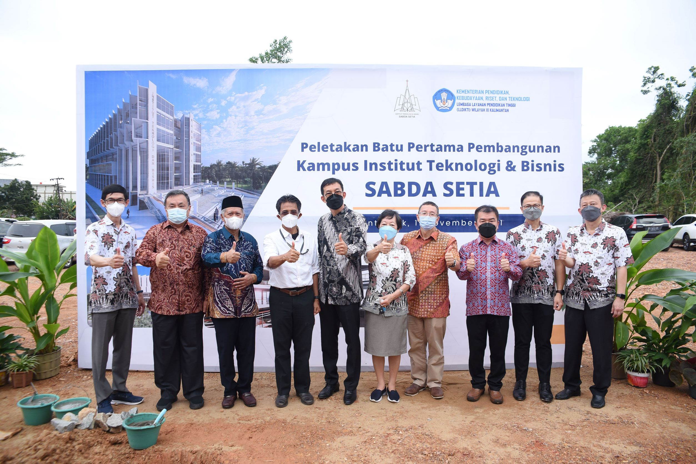
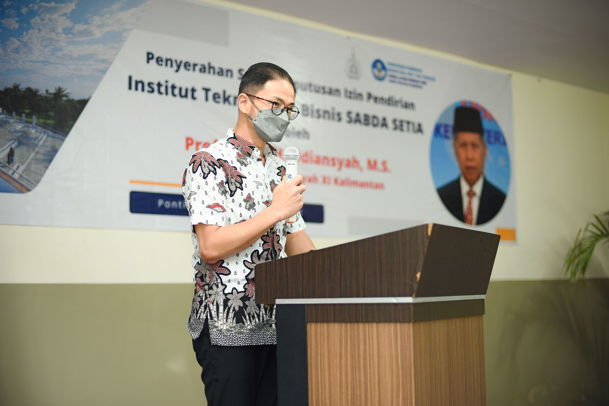
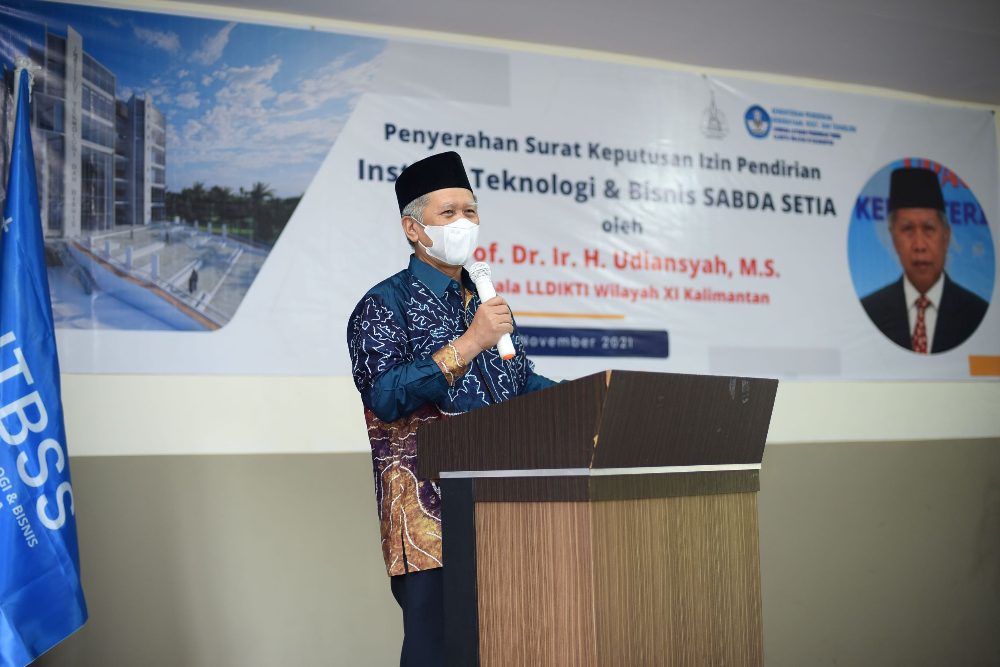
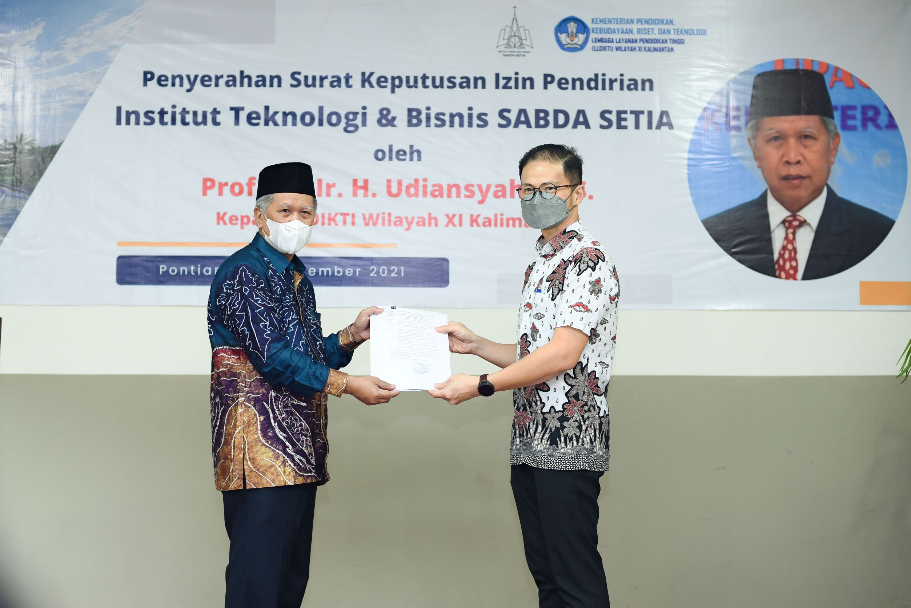
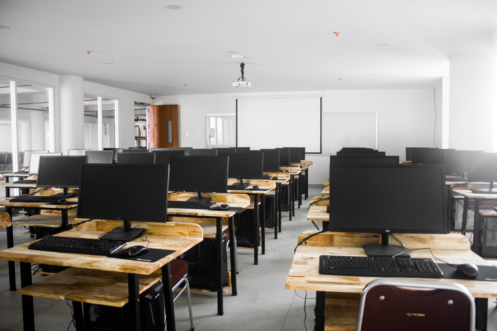
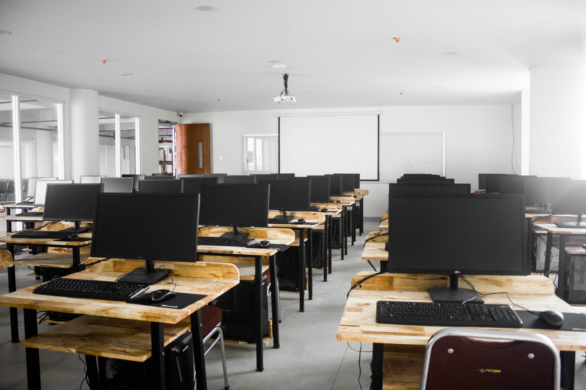

Sejarah Institut Teknologi Dan Bisnis Sabda Setia
Didorong keinginan dan hasrat yang kuat untuk ikut berperan serta dalam proses pencerdasan bangsa dan merupakan kelanjutan jenjang pendidikan menengah yang telah diselenggarakan oleh Yayasan Gereja Protestan Kampung Bali (YGPKB), yang merupakan kepanjangan pelayanan yang diamanatkan oleh Gereja Kristen Kalimantan Barat (GKKB) Jemaat Pontianak dalam bidang pendidikan, dan dengan semangat kebangsaan dan persatuan Indonesia pada tanggal 13 Oktober 2019 dibentuk Kompartemen Pendidikan Tinggi (KomDikti) oleh YGPKB Pontianak dengan tujuan sebagai penyelenggara untuk mendirikan pendidikan tinggi yang diberi nama Institut Teknologi dan Bisnis Sabda Setia (ITBSS).
Setelah melalui proses yang panjang, maka berkat anugerah dan pertolongan Tuhan yang Maha Baik, maka Keputusan Menteri Pendidikan, Kebudayaan, Riset dan Teknologi Nomor 460/E/O/2021 tentang Izin Pendirian Institut Teknologi dan Bisnis Sabda Setia di Kota Pontianak Provinsi Kalimantan Barat yang diselenggarakan oleh Yayasan Gereja Protestan Kampung Bali, bisa terbit dan diserahkan langsung oleh Kepala Lembaga Layanan Pendidikan Tinggi XI Bapak Prof. Dr. H. Udiansyah, M.S. pada tanggal 11 November 2021.
Galeri Kampus
  
 
